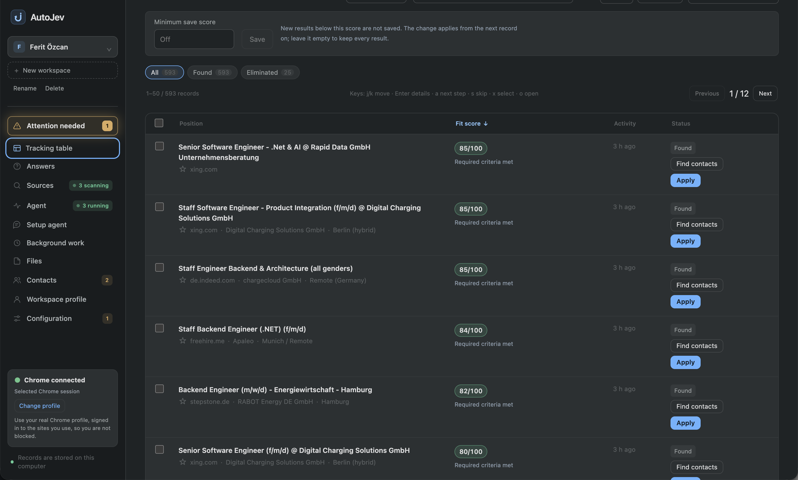
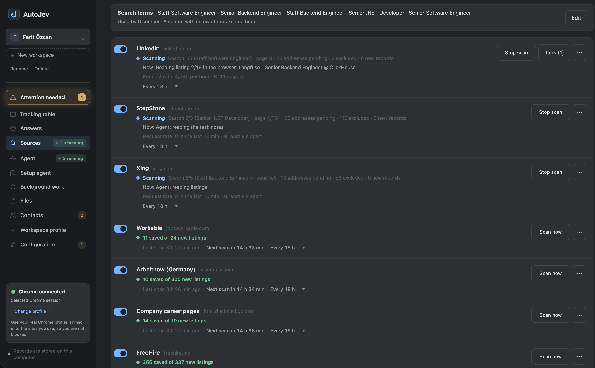

AI job search that finds jobs
and applies for you
AutoJob is a free, open-source AI job search assistant for your desktop. It searches LinkedIn, Indeed, StepStone and 25+ job sites, scores every listing against your CV, fills in and submits applications, and writes a cover letter for every job.

Every job it finds, scored against your CV, with one-click Apply and Find contacts.
What the AI job search assistant does
🔎 Automatic job search
Searches LinkedIn, Indeed, StepStone, XING, Workable, remote job boards and company career pages on a schedule.
🎯 AI job matching
Reads every listing and compares it with your CV, with a score and a short reason. Jobs that break your rules are left out.
📝 Auto-apply
Opens the application form, fills in every field from your profile, uploads your CV and submits it once.
✉️ AI cover letters
Writes a cover letter for each company and role from your CV. Approve each one or let them go out automatically.
🤝 Recruiter outreach
Finds the recruiter or hiring manager on LinkedIn and drafts a personal note you approve before it is sent.
📋 Application tracker
Every job and application in one table, with updates and questions on Telegram.

Your job sites, scanned in the background on a schedule.
How it works
- Talk to the assistant. Tell it the role, city, salary and remote preference, and add your CV.
- Choose how much it may do. Only collect jobs, prepare applications for you to check, or apply on its own.
- Press run. It works on the real job sites in your Chrome and fills your table with matching jobs and sent applications.
- Step in only when needed. Logins and CAPTCHAs are handed over to you.
Private and free
Your profile, CV and application history stay on your computer. There is no AutoJob account and no AutoJob server. AutoJob is free and open source (GPL-3.0); it uses the AI assistant you already have: Claude Code, Codex CLI or OpenCode.